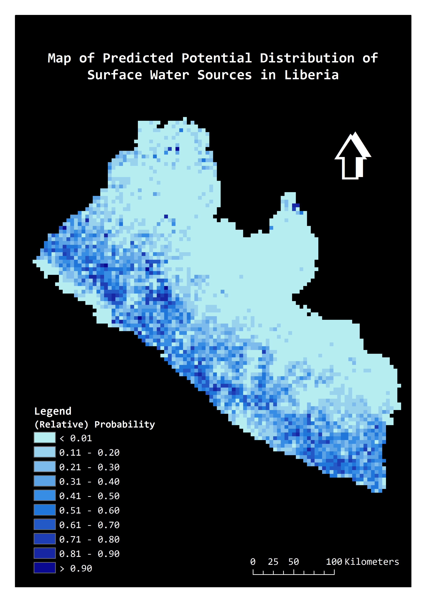

|
| Home | About | Case Study | Method | Downloads | Contact |
Sustainable Development Goal (SDG) 6Ensure availability and sustainable management of water and sanitation for allAfter the expiry of the United Nations’ Millennium DevelopmentGoals (MDGs) in 2015, the international focus on water and sanitation has shifted to a broader agenda through the SDG 6. The ongoing development of indicators for enhanced monitoring of progress towards the SDG targets is likely to place greater demands on existing datasets. Between MDG 7c and SDG 6, many more forms of data concerning drinking-water and sanitation have become available. One such form of data is the spatial interpolation surfaces from USAID's Demographic and Health Surveys (DHS) Program, which reports public health-related indicators such as water source (population living in households using an improved water source) and sanitation (population living in households using no toilet facility) in grid cell for least developed countries.Ideas for #SDGinsights: Combining water point data and machine learning to predict the potential geographic distribution of disadvantaged drinking-water accessAlthough SDG monitoring on drinking-water progress is often based on national level indicators, sub-nationally and geospatially disaggregated indicators may become increasingly important as they could effectively reveal inequalities in services between different geographic locations and population groups. As more recent concerns are raised about issues such as water quality, functionality of facility, and continuity of service, it may also become increasingly important to disaggregate data by specific type of water service. Currently, disadvantaged drinking water services are not often reported at high levels of geospatial disaggregation. Fortunately, as more geospatial data sources become available with the transition from the MDGs to the SDGs, predicting the potential spatial distribution of specific type(s) of drinking-water source using machine learning method becomes possible. DHS modelled surfaces as one of such novel data could potentially be the important sources of predictive covariates for modelling the potential distribution of specific type(s) of drinking-water service.CASE STUDY: Mapping the potential geographic distribution of surface water drinking sources in LiberiaResults:Kenya:The following maps illustrate the spatial coverages of improved water source (left) and open defecation (right) by wealth in Kenya. Visually, rich areas on the maps show better improved water source coverage and less people without access to toilet in comparison with poor areas. According to zonal statistics (see the table below), the average coverage of improved water source in rich area in Kenya is 67%, whilst in poor area is 39%. In addition, people in rich area mostly (85% averagely) have access to toilet, whilst approximately 71% of people in poor area in average do not have a toilet in their households. 

 Zonal statistics:  Tanzania: The following maps show the spatial coverages of improved water source (left) and open defecation (right) by wealth in Tanzania. Similarly, rich areas show overall better situations than poor areas on both maps. The numbers in the zonal statistics table needs to be interpreted with caution in terms of national comparison, as in this case we are counting the geographic areas across the countries rather than the actual populated areas.  Zonal statistics: |